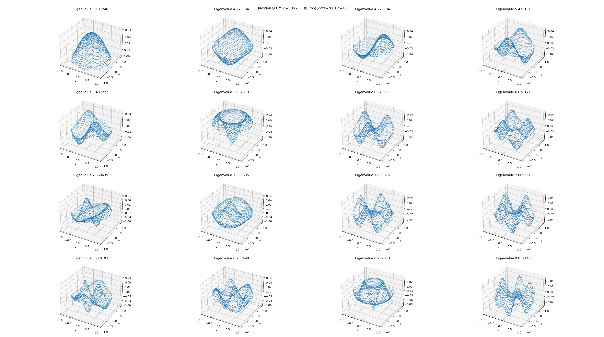
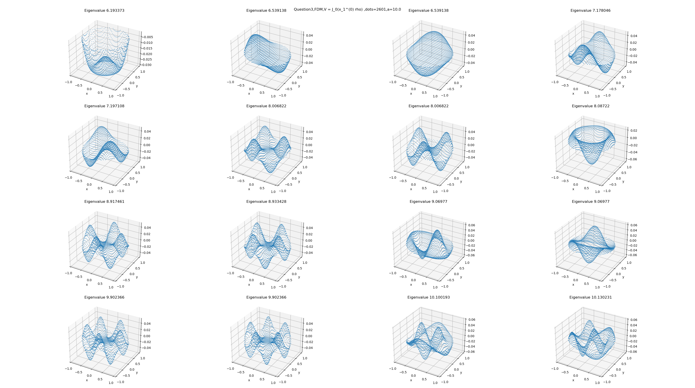
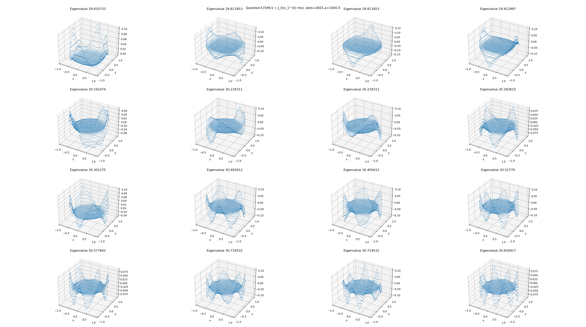

小课题 3
对于二维无穷深势阱，半径ρ=1；在圆内，H^=2mp^2=−2mℏ2Δ,ψ∣∂D=0。取ℏ=2m=1,E=2mℏ2k2=k2。
1. 求解这一本征值问题：H^ψ=Eψ。写出本征值、本征态的表达式。
2. 按本征值从小到大排序，找基矢{En,φn(ρ,θ),n=1,2,…}。
3. 增加势场，V=a∗φ1(ρ,θ),a=1,10,100,…H^=−2mℏ2Δ+V,ψ∣∂D=0，两种方法求解。a.谱方法、b.有限差分法。对比两种方法得到的本征值和本征态。
结果与讨论
a. 本征值问题求解
其实我们在通用理论中求过了，也就是二维圆形区域齐次Helmholtz方程的解(1st B.C.)，这里就直接改动一下就可以：
(Δ+E)u(ρ,θ)=0,ρ<1;θ∈[0,2π)u(1,θ)=0
将上面的式子展开并考虑物理的情况：
ρ1∂ρ∂(ρ∂ρ∂u)+ρ21∂θ2∂2u+Eu=0u(1,θ)=0,u(ρ,θ)∣ρ=0有限u(ρ,θ)=u(ρ,θ+2π)
令u(ρ,θ)=R(ρ)Φ(θ)，轴向方程为：
dθ2d2Φ(θ)+m2Φ(θ)=0;Φ(θ)=Φ(θ+2π)
在实数域中，其通解可以表示为：
φ(m)=cosmθ,sinmθm=0,±1,±2,…
径向方程可以表示为：
ρ1dρd(ρdρdR(ρ))+(E−ρ2m2)R(ρ)=0→BesselEquationR(1)=0,R(0)有限
Bessel方程的解为：
R(m)(ρ)=CmJm(kρ)+DmNm(kρ)
将边界条件和物理条件代入可得：
R(0)有限→Dm=0R(1)=0→Jm(E)=0
因此，这个问题的本征值和本征解为：
En(m)=[xn(m)]2,n=1,2,3,…Rn(m)(ρ)=Jm(xn(m)∗ρ),n=1,2,3,…
综上，这个本征值问题的解是：
En(m)=[xn(m)]2,n=1,2,3,…φn(m)=Jm(xn(m)∗ρ)(cmcosmθ+dmsinmθ),n=1,2,3,…andm=0,±1,±2,…
b. 本征值排序
|
1 |
2 |
3 |
4 |
5 |
6 |
7 |
8 |
| eigenvalue |
2.404826 |
3.831706 |
5.135622 |
5.520078 |
6.380162 |
7.015587 |
7.588342 |
8.417244 |
| solution |
J0(x1(0)ρ) |
J1(x1(1)ρ)(c1cos(θ)+d1sin(θ)) |
J2(x1(2)ρ)(c2cos(2θ)+d2sin(2θ)) |
J0(x2(0)ρ) |
J3(x1(3)ρ)(c3cos(3θ)+d3sin(3θ)) |
J1(x2(1)ρ)(c1cos(θ)+d1sin(θ)) |
J4(x1(4)ρ)(c4cos(4θ)+d4sin(4θ)) |
J2(x2(2)ρ)(c2cos(2θ)+d2sin(2θ)) |
|
9 |
10 |
11 |
12 |
13 |
14 |
15 |
16 |
| eigenvalue |
8.653728 |
8.771484 |
9.761023 |
9.936110 |
10.173468 |
11.064709 |
11.086370 |
11.619841 |
| solution |
J0(x3(0)ρ) |
J5(x1(5)ρ)(c5cos(5θ)+d5sin(5θ)) |
J3(x2(3)ρ)(c3cos(3θ)+d3sin(3θ)) |
J6(x1(6)ρ)(c6cos(6θ)+d6sin(6θ)) |
J1(x3(1)ρ)(c1cos(θ)+d1sin(θ)) |
J4(x2(4)ρ)(c4cos(4θ)+d4sin(4θ)) |
J7(x1(7)ρ)(c7cos(7θ)+d7sin(7θ)) |
J2(x3(2)ρ)(c2cos(2θ)+d2sin(2θ)) |
c. 外加势场
i. 有限差分法
| eigenvalues\a_value |
1.0 |
10.0 |
100.0 |
1000.0 |
| 1 |
3.107246 |
6.193373 |
13.807210 |
29.810732 |
| 2 |
4.275194 |
6.539138 |
13.860857 |
29.811853 |
| 2 |
4.275194 |
6.539138 |
13.860857 |
29.811853 |
| 3 |
5.472101 |
7.178046 |
13.991538 |
29.812997 |
| 3 |
5.487222 |
7.197108 |
14.059785 |
30.192474 |
| 4 |
5.907979 |
8.006822 |
14.292686 |
30.218311 |
| 5 |
6.678171 |
8.006822 |
14.292686 |
30.218311 |
| 5 |
6.678171 |
8.087220 |
14.631692 |
30.283615 |
| 6 |
7.360635 |
8.917461 |
14.671047 |
30.301275 |
| 6 |
7.360635 |
8.933428 |
15.096838 |
30.405612 |
| 7 |
7.856075 |
9.069770 |
15.096838 |
30.405612 |
| 7 |
7.869661 |
9.069770 |
15.614512 |
30.527790 |
| 8 |
8.720103 |
9.902366 |
15.621051 |
30.577842 |
| 8 |
8.750498 |
9.902366 |
16.204547 |
30.719532 |
| 9 |
8.982613 |
10.100193 |
16.204547 |
30.719532 |
| 10 |
9.032446 |
10.130231 |
16.801655 |
30.830917 |
区分不同的图请看标题，上面的a都有对应的图，这里只给出对比性比较强的几个：




我们可以看到，本征值是随a增加而增加的；当a达到一定程度的时候，也就是V起主导作用时，中心的势场较大，本征态对应的值就比较小。
ii.谱方法
这里的公式和通用理论给出的结果不太一样，但是原理是一样的；因此我们直接给出结论：
Mmn∗kn2→Mmn′=⟨φm,(kn2+V(x))φn(x)⟩
对于本题，V不含θ项，因此不需要使用重积分。
| eigenvalues\a_value |
1.0 |
10.0 |
100.0 |
1000.0 |
| 1 |
2.550435 |
3.583058 |
7.810977 |
18.218169 |
| 2 |
3.907549 |
4.521801 |
7.957144 |
18.623274 |
| 2 |
5.184400 |
5.598101 |
8.371184 |
19.090313 |
| 3 |
5.576834 |
6.069234 |
8.996927 |
19.319150 |
| 3 |
6.414950 |
6.716393 |
9.723970 |
19.370630 |
| 4 |
7.058585 |
7.436416 |
10.056648 |
20.953977 |
| 5 |
7.614758 |
7.846299 |
10.604656 |
20.986437 |
| 5 |
8.451129 |
8.750827 |
10.664346 |
21.091049 |
| 6 |
8.689449 |
8.978745 |
11.351716 |
25.425068 |
| 6 |
8.792430 |
9.009779 |
11.522177 |
26.094930 |
| 7 |
9.788618 |
10.035942 |
12.086338 |
26.961608 |
| 7 |
9.953222 |
10.105925 |
12.389495 |
27.142963 |
| 8 |
10.203362 |
10.472134 |
12.436233 |
27.337831 |
| 8 |
11.087720 |
11.228661 |
13.105414 |
30.331100 |
| 9 |
11.100681 |
11.294242 |
13.288751 |
30.674039 |
| 10 |
11.645248 |
11.873932 |
14.139086 |
31.145400 |


对比两种方法得到的结果，我们可以发现在a比较小的时候两种方法符合的比较好，后面就不行了。我感觉吧，主要的问题还是谱方法选取的本征态的个数太少了，只有16个；但是列出来更多的解需要的工作量还是很大的，从中我们可以方便的比较两种方法的优缺点，谱方法在数值方面的表现型不是很好，无论是从时间复杂度上还是算法的精确性上。